VICTORIA MEMORIAL
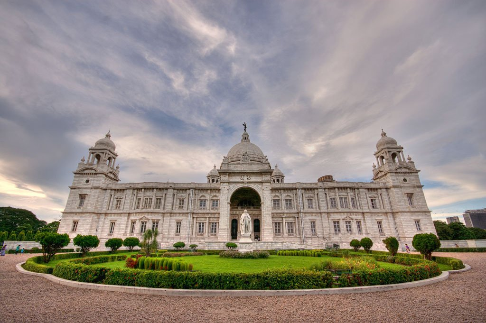The Victoria Memorial in Kolkata is one of the most historical tourist places in India and was built during the peak of the British era in India. The then Viceroy Lord Curzon laid down the idea of this monument but its actual design was done by Sir William Emerson.
Multitudes of lush gardens, a museum filled with British memorabilia including weapons, paintings, sculptures, artifacts etc and royal portrait of the Queen are what you will find in this beautiful monument. One of the best paintings you will find here is the one by Russian artist Vasili Verestchagin. This painting depicts the Prince of Wales in Jaipur in 1876.
The Victoria Memorial is a large marble building in Kolkata, West Bengal, India, which was built between 1906 and 1921. It is dedicated to the memory of Queen Victoria (1819–1901) and is now a museum and tourist destination under the auspices of the Ministry of Culture.[2] The memorial lies on the Maidan (grounds) by the bank of the Hooghly River, near Jawaharlal Nehru road.
History
In January 1901, on the death of Queen Victoria, George Curzon, 1st Marquess Curzon of Kedleston and Viceroy of India, suggested the creation of a fitting memorial. He proposed the construction of a grand building with a museum and gardens. Curzon said,
"Let us, therefore, have a building, stately, spacious, monumental and grand, to which every newcomer in Calcutta will turn, to which all the resident population, European and Native, will flock, where all classes will learn the lessons of history, and see revived before their eyes the marvels of the past."
The Prince of Wales, later King George V, laid the foundation stone on 4 January 1906, and it was formally opened to the public in 1921.
In 1912, before the construction of the Victoria Memorial was finished, King George V announced the transfer of the capital of India from Calcutta to New Delhi.[8] Thus, the Victoria Memorial was built in what would be a provincial city rather than a capital.
Design
The Victoria Memorial's architect was William Emerson (1843–1924), president of the Royal Institute of British Architects. The design is in the Indo-Saracenic revivalist style which uses a mixture of British and Mughal elements with Venetian, Egyptian, Deccani and Islamic architectural influences. The building is 338 feet (103 m) by 228 feet (69 m) and rises to a height of 184 feet (56 m). It is constructed of white Makrana marble.[13] The gardens of the Victoria Memorial were designed by Lord Redesdale and David Prain. Emerson's assistant, Vincent Jerome Esch, designed the bridge of the north aspect and the garden gates.
William Emerson
Emerson was a pupil of William Burges and an architectural theorist. He first visited India in about 1860. Emerson designed the Crawford Market, Mumbai (1865),[14] the All Saints Cathedral, Allahabad (1871), and Muir College (1873). Emerson moved to the princely state of Bhavnagar, Gujarat, and designed the Takhtsingji Hospital and the Nilambagh Palace. There, he learned to include Hindu architectural elements in his works.
Vincent J. Esch
In 1899, Esch was appointed assistant engineer at the Bengal Nagpur Railway, a job which gave him much practical experience in large-scale construction and costings.[18] In 1902, Emerson engaged Esch to sketch his original design for the Victoria Memorial. After designing the temporary exhibition building for the Delhi Durbar of 1903, Curzon found Esch to be a suitable assistant for Emerson.[19] Esch had also won a competition to design the Bengal Club building at Chowringhee[6] and the Bengal-Nagpur Railway head office building at Garden Reach.
Exhibitions
The Victoria Memorial has 25 galleries. These include the royal gallery, the national leaders gallery, the portrait gallery, central hall, the sculpture gallery, the arms and armoury gallery and the newer, Calcutta gallery. The Victoria Memorial has the largest single collection of the works of Thomas Daniell (1749–1840) and his nephew, William Daniell (1769–1837).[22] The Victoria Memorial also has a collection of rare and antiquarian books such as the illustrated works of William Shakespeare, the Arabian Nights and the Rubaiyat by Omar Khayyam as well as books about kathak dance and thumri music by Wazid Ali Shah. However, the galleries and their exhibitions, the programmatic elements of the memorial do not compete with the purely architectural spaces or voids.
Royal gallery
The Royal Gallery displays a number of portraits of Victoria and Prince Albert, and paintings illustrating their lives, by Jansen and Winterhalter. The oil paintings are copies of those in London. They include: Victoria receiving the sacrament at her coronation in Westminster Abbey (June 1838); Victoria's marriage to Albert in the Chapel Royal at St James's Palace (1840); the christening of the Prince of Wales in St. George's Chapel, Windsor Castle (1842); the marriage of the Prince of Wales (Edward VII) to Princess Alexandra (1863); Victoria at the First Jubilee service at Westminster Abbey (1887) and the Second Jubilee service at St. Paul's Cathedral (June 1897). Victoria's childhood rosewood pianoforte and her correspondence desk from Windsor Castle stand in the centre of the room. Edward VII presented these items to the Victoria Memorial. On the south wall hangs the Russian artist Vasily Vereshchagin's oil painting of the state entry of Edward VII, (then Prince of Wales), into Jaipur in 1876.
Calcutta gallery
In the mid 1970s, the matter of a new gallery devoted to the visual history of Calcutta was promoted by Saiyid Nurul Hasan, the minister for education. In 1986, Hasan became the governor of West Bengal and chairman of the board of trustees of the Victoria Memorial. In November 1988, Hasan hosted an international seminar on the Historical perspectives for the Calcutta tercentenary. The Calcutta gallery concept was agreed and a design was developed leading to the opening of the gallery in 1992. The Calcutta gallery houses a visual display of the history and development of Calcutta from Job Charnock (1630–1692) of the English East India Company to 1911, when the capital of India was transferred to New Delhi. The gallery also has a life-size diorama of Chitpur road in the late 1800s.
Interesting fact: There are two sets of mysterious inscriptions on the monument. One is “VRI” which means Victoria Regina Imperatrix and the other is “Dieu Et Mon Droit”. The first means Victoria Queen and Empress and the latter means “God and my right”.
Entry fee: Indians- INR 20
Foreigners- INR 200
Open from: 5:30am- 6:15pm daily
Must see: The black bronze statue “Angel of Victory” that lies on the apex of the memorial’s dome. In favorable weather, it also acts as a weathercock.
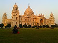
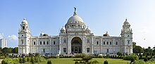
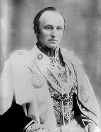
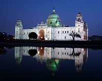
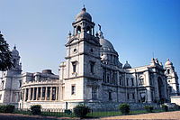
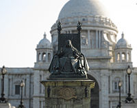
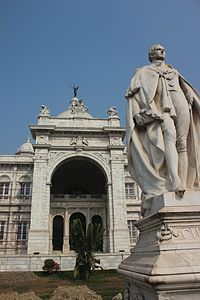
 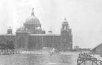
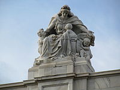
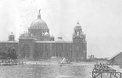
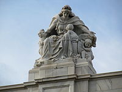
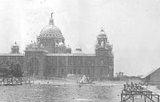
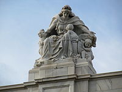
Developed By: Vineet Choudhary